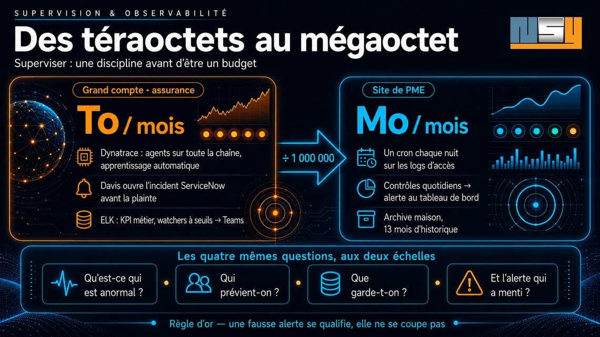

Des téraoctets au mégaoctet :
superviser, une discipline avant d’être un budget
Chez un grand compte de l'assurance, la production déverse des téraoctets de journaux chaque mois, surveillés par deux outils spécialisés et une IA qui ouvre les incidents toute seule. Sur un site de PME, un script lit chaque nuit des journaux serveur qui se comptent en mégaoctets par mois. Du téraoctet au mégaoctet, il y a six ordres de grandeur : un facteur d'un million. Et pourtant, on y pose exactement les mêmes questions. Je travaille dans les deux. Récit des deux côtés du miroir.

Les quatre questions
Supervision, observabilité, monitoring : peu importe le mot, le métier tient en quatre questions.
Qu'est-ce qui est anormal — et comment le sait-on avant l'utilisateur ? Qui prévient-on, et par quel canal ? Que garde-t-on, et combien de temps ? Et que fait-on d'une alerte qui a menti ?
Ces questions ne dépendent ni de la taille du système, ni du budget. Seules les réponses changent d'échelle.
Côté grand compte : deux outils, deux regards
En mission chez un grand compte de l'assurance — des systèmes critiques où le temps de réponse se compte en millisecondes — la supervision repose sur deux piliers complémentaires. Deux outils, et surtout deux regards qui ne voient pas la même chose.
Dynatrace observe l'exécution. Ses agents instrumentent l'ensemble de la chaîne de production : la JVM et sa consommation mémoire, le CPU, le débit réseau et les paquets rejoués, les caches distribués, les erreurs du stockage objet. C'est un outil d'une puissance remarquable pour qui exploite vraiment ses métriques — la stack complète, en continu, sans rien demander aux applications elles-mêmes.
Mais sa vraie force est ailleurs : Davis, le moteur d'intelligence artificielle intégré à Dynatrace. Ce n'est pas un modèle génératif : une IA dite causale, déterministe, qui apprend le comportement normal de chaque composant — des seuils auto-adaptatifs, jamais saisis à la main —, s'appuie sur la cartographie des dépendances en temps réel (Smartscape) pour remonter l'arbre des causes, et regroupe tous les événements d'une même cause racine en un seul « problème » plutôt qu'en une rafale d'alertes. Il s'accorde même quelques minutes d'analyse avant de le déclarer, précisément pour ne pas crier faux. Ce problème, déjà qualifié, devient un incident créé directement dans ServiceNow. Personne n'a regardé un graphique : l'incident existe, qualifié et tracé, avant que le premier utilisateur ait décroché son téléphone. La supervision proactive, c'est exactement cela — l'alerte précède la plainte.
ELK lit ce que les applications racontent. Les logs applicatifs portent ce qu'aucun agent d'infrastructure ne peut deviner : les compteurs métier, ceux dont on tire les KPI. ELK offre aussi la profondeur d'historique — précieuse pour instruire les incidents non prioritaires, ceux qu'on analyse à froid. Et il alerte, lui aussi : des watchers surveillent les temps de réponse des services et les codes d'erreur HTTP porteurs d'exception, et poussent leurs alertes dans un canal Teams, au milieu de l'équipe.
Deux façons de décider qu'un chiffre est anormal. Côté Dynatrace, aucun seuil n'est saisi à la main : Davis s'appuie sur de l'apprentissage automatique — il apprend le comportement habituel de chaque composant et signale l'écart, y compris là où personne n'avait pensé à poser une alerte. Côté ELK, les watchers reposent sur des seuils de tolérance définis explicitement — tant d'erreurs 500 sur la fenêtre, tel temps de réponse à ne pas dépasser — parce que la détection d'anomalies par apprentissage y relève d'un niveau de licence supérieur. Les deux approches se complètent plus qu'elles ne se concurrencent : l'apprentissage voit ce qu'on n'avait pas prévu de surveiller ; le seuil garantit qu'on surveille ce qu'on a décidé de surveiller, et que la règle est lisible par tous.
Un incident type raconte la complémentarité. Un matin, le volume de HTTP 500 grimpe en flèche : le watcher ELK déclenche, l'alerte tombe dans Teams. En parallèle, Dynatrace remonte des erreurs sur le stockage S3. Deux outils, deux angles du même événement — l'un voit le symptôme côté métier, l'autre pointe l'infrastructure en cause. C'est la convergence des deux qui fait le diagnostic ; chacun seul n'aurait donné qu'une moitié d'histoire.
Le tout s'inscrit dans un rituel : chaque matin, pendant la montée en charge du SI, on regarde les taux d'erreur et les temps de réponse. Pas parce qu'une alerte a sonné — parce que c'est l'heure où les choses se révèlent.
La règle qui vaut de l'or
Avec des téraoctets de logs par mois, les fausses alertes existent, forcément. La tentation naturelle est de couper ce qui crie pour rien.
La discipline dit l'inverse : une fausse alerte s'identifie, s'analyse, puis se classe comme telle. Elle ne se coupe pas. Tout indicateur doit être analysé — celui qu'on désactive un mardi parce qu'il agaçait est exactement celui qui aurait vu l'incident du jeudi. Le silence d'un capteur éteint ressemble à s'y méprendre à une production saine.
Côté PME : les mêmes réflexes, en quelques mégaoctets
Sur les sites que NSY conçoit et exploite, il n'y a ni Dynatrace ni cluster ELK — et il n'y a aucune raison qu'il y en ait. Il y a des journaux d'accès serveur, un collecteur qui les lit chaque nuit, et un tableau de bord privé. Des mégaoctets de logs par mois, là où le grand compte se mesure en téraoctets : un facteur d'un million entre les deux unités.
Et pourtant, les quatre questions sont les mêmes — avec les mêmes réponses, en miniature.
Qu'est-ce qui est anormal ? Pas seulement « combien de visiteurs ». Le collecteur distingue, par exemple, trois natures de lectures faites par les intelligences artificielles : celle déclenchée par la question d'un humain — ChatGPT vient lire une page pour répondre à quelqu'un, à cet instant précis —, celle qui alimente un moteur de recherche, et le simple crawl d'entraînement. Sur deux semaines : plus de deux mille lectures de robots, dont 8 % seulement relèvent d'une vraie conversation. Sans cette distinction, le chiffre global rassure et ne dit rien — l'équivalent, à cette échelle, d'un tableau de bord qui confondrait transactions métier et sondes de supervision.
Qui prévient-on ? Des contrôles quotidiens — jusqu'à l'accessibilité des favicons, dont la disparition silencieuse remplace votre logo par un globe gris dans Google — remontent leurs anomalies directement dans le résumé du tableau de bord, là où le regard passe chaque jour. Une alerte qui vit dans un fichier de log que personne n'ouvre n'est pas une alerte.
Que garde-t-on ? L'hébergeur mutualisé ne conserve que cinq semaines de journaux bruts. Chaque question nouvelle posée au passé — « et si on ventilait autrement ? » — butait sur ce mur. Le collecteur archive donc désormais chaque journée close, hors web et hors dépôt de code, avec treize mois de rétention : de quoi comparer un été à l'autre, pour quelques mégaoctets par an une fois compressés.
Et l'alerte qui a menti ? La leçon est arrivée cette semaine, en version artisanale. Un script de mesure interrogeait un moteur de réponse ; le moteur, saturé, refusait de répondre — et le script classait ces refus en « résultat négatif ». Une mesure qui ne distingue pas « mesuré et négatif » de « pas mesuré du tout » ment avec l'aplomb d'un chiffre exact. C'est très exactement la règle du grand compte : tout indicateur s'analyse, aucun ne se présume.
Les correspondances, ligne à ligne
| Grand compte | Site de PME | |
|---|---|---|
| Collecte | agents Dynatrace + ingestion ELK | un cron sur les logs d'accès |
| Volumétrie | téraoctets / mois | mégaoctets / mois |
| Alerte proactive | Davis ouvre l'incident ServiceNow | contrôles quotidiens → alerte au tableau de bord |
| Détection | apprentissage automatique (Davis) · seuils de tolérance (watchers) | comparaison à la période précédente, lecture humaine |
| Alerte sur seuil | watchers ELK → canal Teams | (piste d'évolution — assumée) |
| KPI métier | compteurs extraits des logs applicatifs | lectures IA par nature, provenance Google, avis clients |
| Historique | ELK, analyses à froid | archive maison, 13 mois |
| Règle d'or | une fausse alerte se qualifie, ne se coupe pas | un refus de mesure n'est pas un zéro |
Ce que l'IA apporte — et ce qu'elle ne remplace pas
La question arrive toujours, et elle mérite une réponse sans enthousiasme de commande. L'IA apporte trois choses à la supervision, et elle en laisse une quatrième à l'humain.
Détecter sans seuil. C'est déjà en production, et depuis longtemps : Davis, c'est de l'apprentissage automatique — une IA causale, pas un modèle de langage. Un seuil ne voit que ce qu'on lui a dit de voir ; un modèle qui a appris le comportement habituel d'un composant voit l'inattendu — la dérive lente, l'anomalie du dimanche matin, le service qui ne ralentit que sous une combinaison précise de charges. Là où le seuil demande qu'on ait prévu la panne, l'apprentissage accepte qu'on ne l'ait pas prévue.
Corréler. Un incident réel parle toujours dans plusieurs outils à la fois — des 500 dans les logs, des erreurs de stockage dans les métriques, un temps de réponse qui dérive. Réunir ces signaux en une seule histoire, c'est le cœur du diagnostic, et c'est un travail de rapprochement que la machine fait plus vite et plus complètement qu'un œil fatigué à trois heures du matin. C'est exactement ce que fait Davis avec sa carte des dépendances : tous les événements d'une même cause, un seul problème, et la cause racine probable proposée avant qu'on l'ait cherchée.
Raconter. C'est l'apport le plus récent, et celui que NSY a mis en œuvre à son échelle. Le tableau de bord des sites embarque un agent d'analyse qui explique, en français, ce que les courbes montrent : tel pic de visiteurs suit de deux jours la publication d'un article ; telle poussée de lectures par les robots d'IA coïncide avec une action de référencement datée. Mais sa conception impose une règle stricte : le modèle ne calcule rien et ne voit aucune donnée brute. Il reçoit un dossier de faits déjà établis — les pics, les événements datés, les comparaisons — et il n'a que le droit d'écrire. Il lui est même interdit de dire « à cause de » : il dit « coïncide avec », « suit de deux jours ». La corrélation, jamais la causalité. Un agent qui invente une explication plausible à une fausse alerte est pire qu'un tableau de bord muet : une explication fausse mais convaincante crée un effet tunnel — toute une équipe s'engouffre dans la mauvaise piste, et ce sont des heures d'analyse qui partent, au moment précis où elles comptent le plus. Ce n'est pas une hypothèse : c'est du vécu.
Ce qu'elle ne remplace pas : le jugement. Davis ouvre l'incident, mais c'est un humain qui le qualifie — ou le classe en fausse alerte. L'agent raconte, mais c'est un humain qui décide si le récit tient. Tout indicateur doit être analysé, disait la règle d'or ; l'IA accélère l'analyse, elle ne dispense pas de la faire. Et c'est précisément parce qu'elle parle avec aplomb qu'on lui retire le droit d'affirmer.
Une piste, pour finir, à l'échelle du site de PME : treize mois de journaux archivés, c'est exactement ce qu'il faut pour apprendre une saison. Le prochain pas naturel n'est pas d'acheter un outil, c'est de laisser l'agent proposer ses propres seuils à partir de cet historique — et de garder la main sur ce qu'on en fait.
On ne supervise pas parce qu'on est gros
On supervise parce qu'on est en production. C'est le statut qui crée le devoir, pas la taille : dès l'instant où un système sert de vrais utilisateurs, quelqu'un doit savoir s'il va bien — avant eux.
Le reste est affaire d'échelle, et l'échelle, on l'a vu, se règle : deux outils spécialisés et une IA qui ouvre des tickets d'un côté ; un script de quelques centaines de lignes et un tableau de bord sobre de l'autre. Entre les deux, six ordres de grandeur sur le volume — et pas la moindre différence de principe.
NSY pratique les deux échelles : la supervision de systèmes critiques en mission de conseil, et l'exploitation mesurée des sites qu'elle conçoit. Les tableaux de bord décrits ici équipent chaque site livré.
Un système en production et personne pour savoir s’il va bien avant vos utilisateurs ? Parlons-en — et voyez ce que mesure un site livré par NSY.
Cet article vit aussi sur les réseaux — venez en discuter